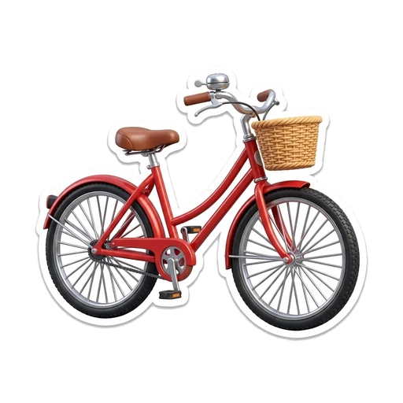
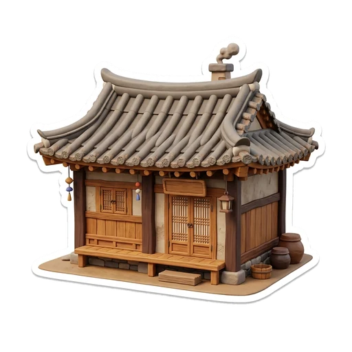
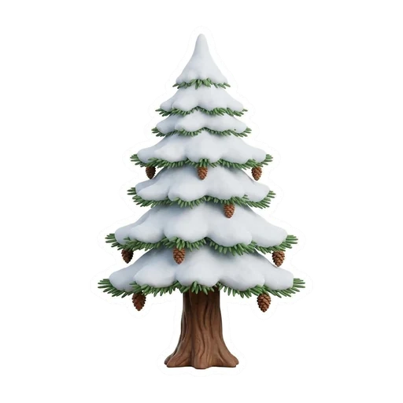

English Quiz · Units 1–4 · Grade 4 · 25 min · 36 marks
A
Teacher: Unit 1 ___/9Unit 2 ___/9Unit 3 ___/9Unit 4 ___/9Total ___/36Level: ____________
1Listening8 marks · 1 each
Listen. Circle the correct picture.
UNIT 1 1. What did Tom do first?
🚲rode his bike
🍦ate an ice cream
⚽played football
UNIT 1 2. Where did Lisa fall?
🍳in the kitchen
🏫at school
🛝in the playground
UNIT 2 3. Why does Max wear a thick coat?
🏃so he can run fast
🔥so he can stay warm
🏊so he can swim
UNIT 2 4. What did grandma give?
UNIT 3 5. What is the baby doing?
🍼drinking milk
🧸playing
😴sleeping
UNIT 3 6. Where is it noisy?
📚in the library
🛝in the playground
🍽️in the café
UNIT 4 7. Why were they late?
🚌the bus was slow
🌧️it was raining
😴they were sleeping
UNIT 4 8. What did they do after the match?
🏠went home
⚽played again
🍕ate pizza
2Words and grammar12 marks · 1 each
Circle the correct word.
UNIT 1
9. Yesterday I ______ my bike to school.
rideroderiding
🐱10. The cat ______ the mouse, but the mouse ran away.
chasechasingchased
😴11. ______ do you go to bed early? Because I am sleepy.
WhoWhereWhy
UNIT 2🧥12. I wear a coat ______ I can stay warm.
butsobecause

13. Last week my uncle ______ a small wooden house.
buildbuildedbuilt

14. Pine trees have needles. They are ______ trees.
deciduousconiferousnoisy
UNIT 3⛄15. Look! The snowman ______ in the sun.
meltsmeltedis melting
16. This bag costs 500 lira. It is very ______ .
quietexpensivethin
🏞️17. We ______ at the park yesterday.
wasiswere
UNIT 418. Our team ______ the match 3–2 last Saturday.
winwonwinning
🚌19. We were late ______ the bus was slow.
butbecauseso
🚶20. The bus was late, ______ we walked to school.
becausebutso
3Reading8 marks · 1 each
Read each short text. Circle the correct answer.
UNIT 1🏞️🐕
Last Sunday, Ben and his dad went to the lake. A big dog chased Ben’s ball into the water. Ben was afraid, but his dad ran and got the ball. Then they ate sandwiches.
21. What did the dog chase?
Ben’s ballBen’s dadA sandwich
22. What did they do at the end?
They went home.They ate sandwiches.They swam.
UNIT 2⛄
Lena lives near a forest. In winter she wears a warm coat so she can stay warm. Yesterday she built a small snowman and gave him a red hat.
23. Why does Lena wear a warm coat?
So she can stay warm.So she can run fast.Because it is hot.
24. What did Lena give the snowman?
A coatA red hatA sandwich
UNIT 3🎂🏡
It is Saturday morning. Sara is in the kitchen and she is making a cake. The kitchen is warm and quiet, but her little brother is making a lot of noise in the garden.
25. What is Sara doing?
She is making a cake.She is playing outside.She is sleeping.
26. Where is the noise?
In the kitchenIn the gardenIn the car
UNIT 4Our school team played a basketball match yesterday. We were tired because it was very hot, so we drank a lot of water. We lost, but we felt happy.
27. Why were they tired?
It was very hot.They lost.They were late.
28. How did they feel at the end?
SadAngryHappy
4Writing8 marks · 2 each
Write ONE full sentence for each. Use a capital letter and a full stop.
⏪
UNIT 1 29. What did you do yesterday? Write one sentence with a past verb.Help: went · played · ate · saw
/2
🧥
UNIT 2 30. Finish the sentence with your own idea: I wear ... so I can ...Help: coat · hat · shoes · warm · run
/2
🚲🚗
UNIT 3 31. Compare a bike and a car. Use but.Help: slow · fast · noisy · quiet
/2
🚌
UNIT 4 32. Why were you happy or tired last week? Use because.Help: happy · tired · match · homework
/2